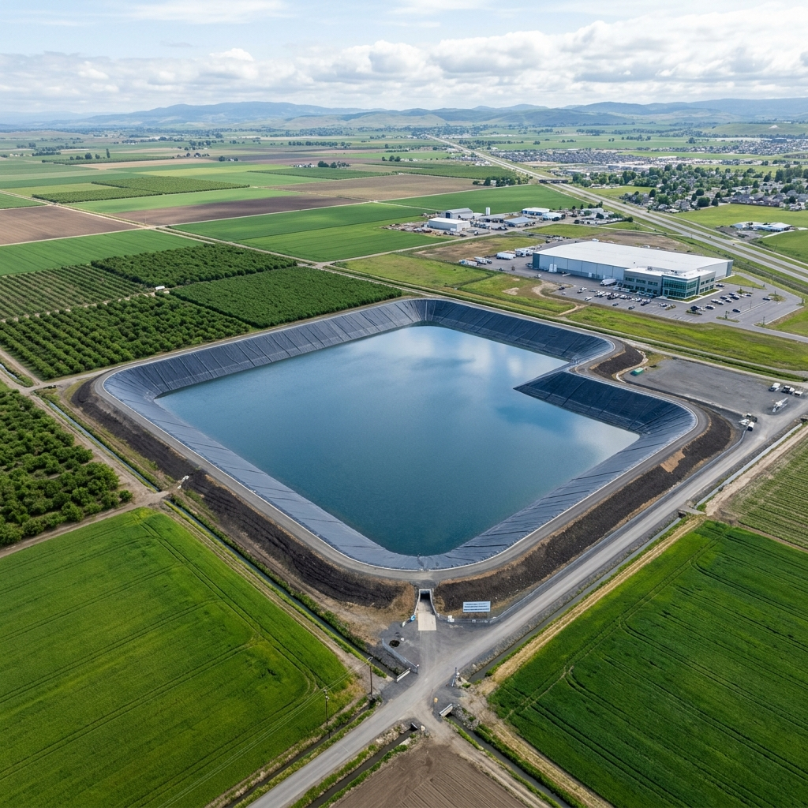
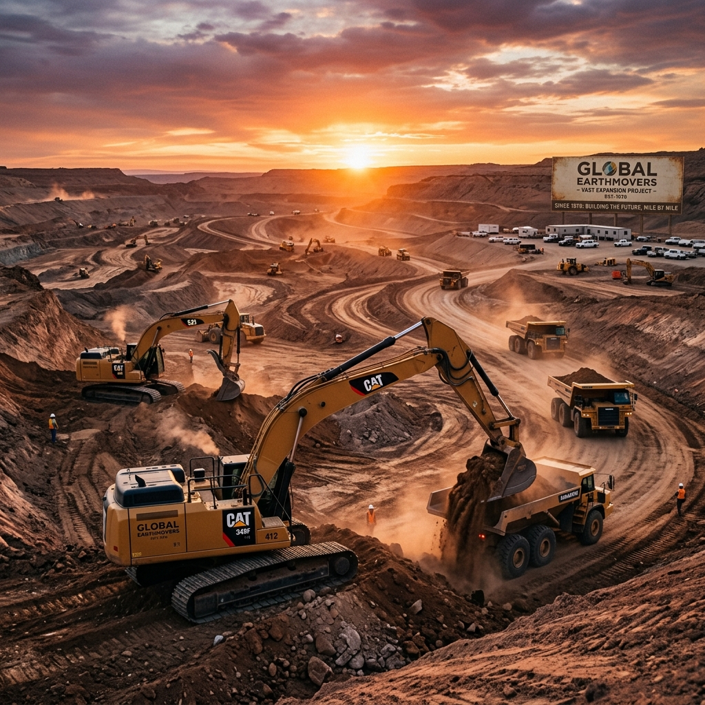

Misión
Construir infraestructura hídrica confiable que potencie la matriz productiva y respete el paisaje, operando con los más altos estándares de seguridad, eficiencia y un servicio cercano al cliente.
Roots diseña y ejecuta infraestructura estratégica para clientes públicos y privados. Desde reservorios de agua impermeabilizados hasta obras civiles complementarias, resolvemos los tres desafíos críticos del territorio: disponibilidad constante del recurso, máxima productividad agrícola y resiliencia operativa ante contingencias climáticas.
Nacimos en el corazón productivo de Cuyo como especialistas en reservorios agrícolas y sistemas de riego. Entendiendo las exigencias de un entorno dinámico, expandimos nuestra capacidad operativa integrando obras civiles y mantenimiento integral.
Hoy, respaldados por una sólida red de proveedores de tecnología hídrica (geomembranas, válvulas, bombeo) y entidades financieras, contamos con un portafolio que abarca desde casos emblemáticos en viñedos y berries, hasta complejas infraestructuras industriales y gubernamentales.
"Más que construir reservorios, blindamos la matriz productiva de la región con ingeniería de precisión."

Reducimos tu dependencia de los turnos de agua o cortes de suministro mediante reservorios impermeabilizados de alta capacidad.
Aplicamos diseño hidráulico y agronómico de precisión para maximizar tus rindes y minimizar mermas operativas.
Implementamos soluciones tecnológicas que anulan las pérdidas por evaporación y filtración, optimizando cada caudal.
Garantizamos una obra ordenada con entregas en plazo, gestionando desde los permisos iniciales hasta el mantenimiento preventivo.
Ejecución integral y velocidad de obra optimizada.
Calidad premium en materiales de impermeabilización y terminaciones civiles.
Asistencia técnica para el acceso a líneas de financiamiento estratégico (Agro Nación, PyME Nación, CFI, BICE, Fondo de la Transformación).
Acompañamiento postventa estructurado con planes de mantenimiento preventivo.
Detrás de cada proyecto exitoso existe una estructura organizacional diseñada para la precisión y la eficiencia en el terreno.
Conducción general, estrategia corporativa y desarrollo comercial.
Relevamientos de precisión, cubicaciones y desarrollo de memorias técnicas.
Planificación milimétrica, protocolos de seguridad e higiene, y control de calidad in situ.
Flota de operadores de maquinaria pesada, cuadrillas especializadas y logística.
Gestión de costos, optimización de cadena de suministro y articulación de herramientas de financiamiento.